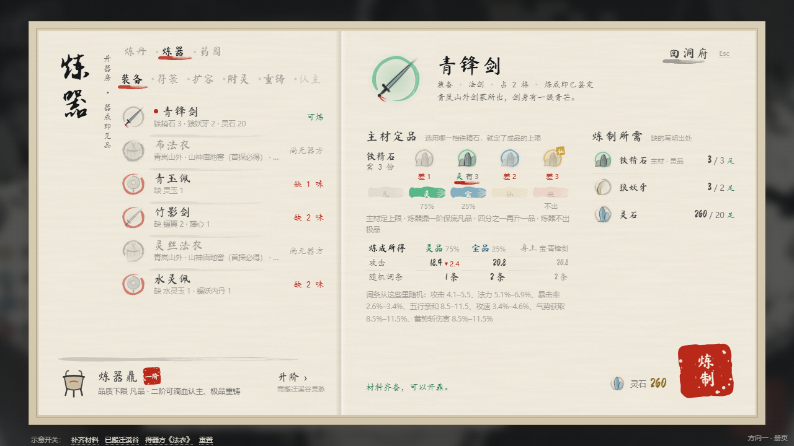
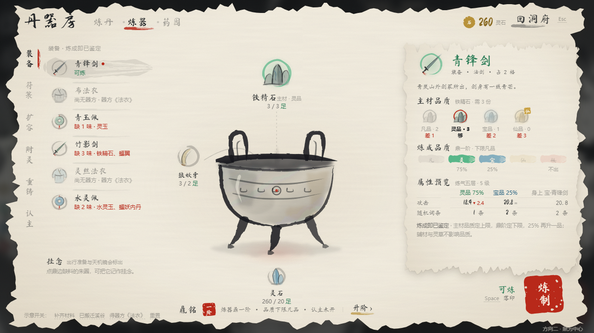
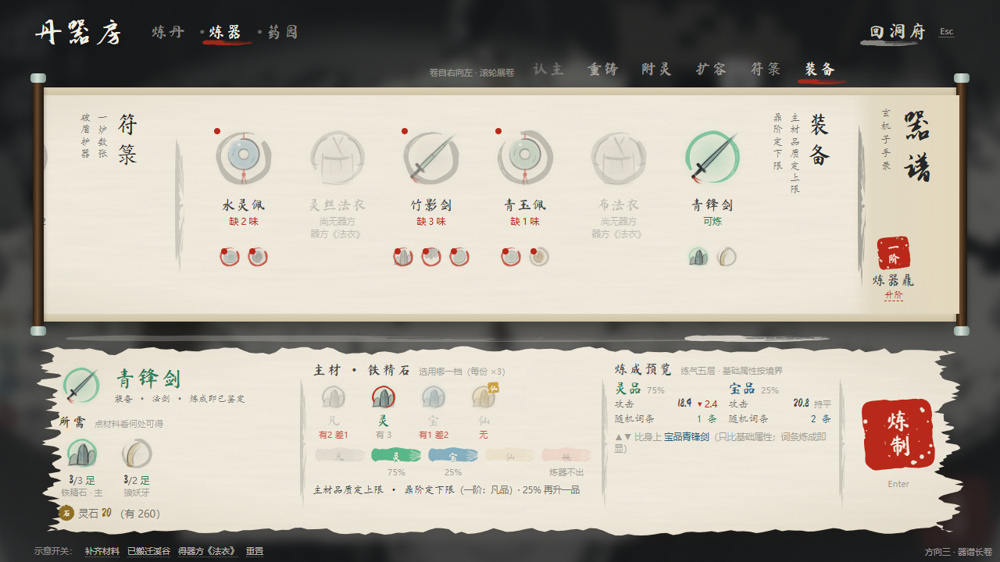

炼器 v2 · 可交互草图
已定稿：方向二 · 鼎为中心（炼丹同版式），游戏内实现截图见 png/forge_v2_impl_*.png
方向一 · 册页
方向二 · 鼎为中心（已定稿）
方向三 · 器谱长卷
并排总览
说明与选择题见
docs/ui/v2/炼器_v2_方案.md
· 每个方向左下角有"示意开关"（补齐材料 / 已搬迁溪谷 / 得器方 / 重置），用来看各种状态

方向一 · 册页

方向二 · 鼎为中心（已定稿，已落地）

方向三 · 器谱长卷